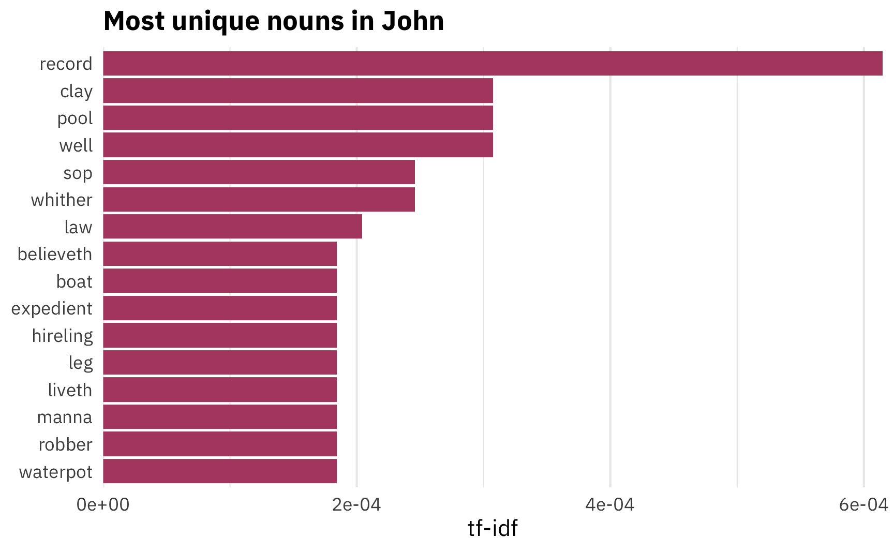
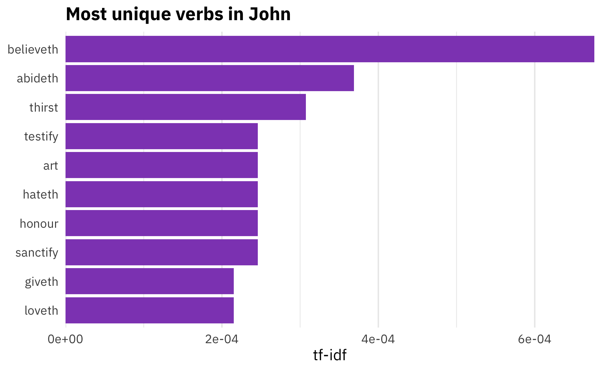
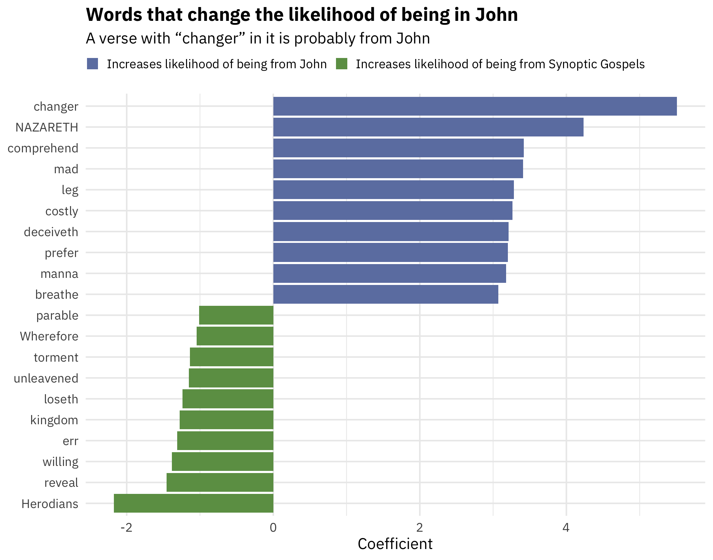

![]()
As part of my goal to read some sort of religiously themed book every day (what I’ve read so far), I’ve been reading Eric Huntsman’s new Becoming the Beloved Disciple, a close reading of the Gospel of John from an LDS perspective.
Near the beginning, Huntsman discusses several word frequencies that make John unique compared to the synoptic gospels of Matthew, Mark, and Luke (which all draw on the same Q source). For instance, Huntsman states that John focuses more on themes of discipleship (since the word “disciple” appears 87 times in John), and on “knowing,” “believing,” and “doing,” which appear more often in John than the other gospels.
In the course of teaching data visualization, I’ve dabbled in text-based analysis with R, and as a PhD student I wrote a couple of now-dormant papers that used cool digital humanities methods to analyze large corpora of text, so my curiosity was piqued. How unique is the word “disciple” in John compared to the synoptic gospels? What are the most unique verbs in John? What words are the most predictive that we’re in John?
Let’s explore with R!
As I started writing this post, I also accidentally created an R package. The complete LDS scriptures are available online for free as an open source database, and I’ve downloaded that CSV file so many times for other little mini projects I’ve done, so I decided to finally just stick it all in a new package so I wouldn’t need to keep downloading the data by hand. So, behold: scriptuRs. Install it with remotes::install_github("andrewheiss/scriptuRs") or devtools::install_github("andrewheiss/scriptuRs"). It’ll be on CRAN once they open up for submissions again in January.
Load packages and data
First, we’ll load the necessary packages and data:
library(tidyverse) # For dplyr, ggplot2, and friends
library(scriptuRs) # For full text of bible
library(tidytext) # For analyzing text
library(cleanNLP) # For fancier natural language processing
# Load data
gospels <- kjv_bible() %>%
filter(book_title %in% c("Matthew", "Mark", "Luke", "John"))Part-of-speech tagging
Because I want to know what the most unique/common verbs are in John, we need to identify the grammatical purpose of each word. There are incredible algorithms for tagging parts of speech, such as Stanford NLP or spaCy, and the cleanNLP package provides an easy frontend for working with any of them.
Installing cleanNLP is trivial—it’s just a normal R package—but connecting it with external NLP algorithms is a little trickier. To install spaCy, which is a really fast tagging library, follow these steps:
Make sure Python is installed.
Open Terminal and run this command to install spaCy:
pip install -U spacyRun this command to download spaCy’s English algorithms:
python -m spacy download en
Then, in RStudio, we can point R to the version of Python that has spaCy installed and tell cleanNLP to use spaCy as the NLP backend:
# Set up NLP backend
reticulate::use_python("/usr/local/bin/python3") # I use homebrew python3
cnlp_init_spacy() # Use spaCy
# cnlp_init_udpipe() # Or use this R-only one without external dependenciesWith all that set up, we can now use cnlp_annotate() to do the actual tagging:
# Determine the parts of speech of the "text" column and use "verse_title" as the id
gospels_annotated <- cnlp_annotate(gospels,
text_name = "text", doc_name = "verse_title")The resulting object is a large annotation, which is a custom class for cleanNLP that‘s not very usable with tidy analysis. Fortunately there’s a data frame in the object in the $token slot:
gospel_terms <- gospels_annotated$token
head(gospel_terms)
## # A tibble: 6 x 10
## doc_id sid tid token token_with_ws lemma upos xpos tid_source relation
## <chr> <int> <int> <chr> <chr> <chr> <chr> <chr> <int> <chr>
## 1 Matthew 1… 1 1 THE "THE " the DET DT 2 det
## 2 Matthew 1… 1 2 book "book " book NOUN NN 0 root
## 3 Matthew 1… 1 3 of "of " of ADP IN 2 prep
## 4 Matthew 1… 1 4 the "the " the DET DT 5 det
## 5 Matthew 1… 1 5 generati… "generation " generati… NOUN NN 3 pobj
## 6 Matthew 1… 1 6 of "of " of ADP IN 5 prepI think this is amazing. There are columns for each word, its lemma (an uncapitalized, unconjugated base form of the word), and the part of speech. The upos column shows the universal part of speech code (like NOUN, PROPN (for proper nouns), VERB, etc.), and the pos column shows a more detailed part of speech code, based on the Penn Treebank codes (you can get tenses, plurals, types of adverbs, etc.).
Most unique words
With the parts of speech tagged, we can now figure out what are the most unique words in John. To do this, we’ll calculate the term-frequency inverse-document-frequency (tf-idf) score for each word. This number is ultimately fairly meaningless in isolation, but it generally measures how unique a word is in a corpus of documents—it is the product of the term frequency and the inverse document frequency:
\[ \begin{aligned} tf(\text{term}) &= \frac{n_{\text{term}}}{n_{\text{terms in document}}} \\ idf(\text{term}) &= \ln{\left(\frac{n_{\text{documents}}}{n_{\text{documents containing term}}}\right)} \\ tf\text{-}idf(\text{term}) &= tf(\text{term}) \times idf(\text{term}) \end{aligned} \]
To calculate this, first we need to specify what document each of these words is in. We can kind of get at that now, since the id column of gospel_terms contains the book, chapter name, and verse number for each word (i.e. Matthew 1:1), but it’d be nice to have a column called book_title. We had that column in the original gospels data, but we lost it after we ran the parts of speech tagging. We’ll create a smaller dataset with the chapter, book, and verse information, and then join that to our tagged data:
gospels_lookup <- gospels %>%
select(verse_title, book_title, chapter_number, verse_number)
gospel_terms <- gospel_terms %>%
left_join(gospels_lookup, by = c("doc_id" = "verse_title"))
glimpse(gospel_terms)
## Rows: 98,555
## Columns: 13
## $ doc_id <chr> "Matthew 1:1", "Matthew 1:1", "Matthew 1:1", "Matthew 1:1", "Mat…
## $ sid <int> 1, 1, 1, 1, 1, 1, 1, 1, 1, 1, 1, 1, 1, 1, 1, 1, 1, 1, 1, 1, 1, 1…
## $ tid <int> 1, 2, 3, 4, 5, 6, 7, 8, 9, 10, 11, 12, 13, 14, 15, 16, 17, 18, 1…
## $ token <chr> "THE", "book", "of", "the", "generation", "of", "Jesus", "Christ…
## $ token_with_ws <chr> "THE ", "book ", "of ", "the ", "generation ", "of ", "Jesus ", …
## $ lemma <chr> "the", "book", "of", "the", "generation", "of", "Jesus", "Christ…
## $ upos <chr> "DET", "NOUN", "ADP", "DET", "NOUN", "ADP", "PROPN", "PROPN", "P…
## $ xpos <chr> "DT", "NN", "IN", "DT", "NN", "IN", "NNP", "NNP", ",", "DT", "NN…
## $ tid_source <int> 2, 0, 2, 5, 3, 5, 8, 6, 8, 11, 8, 11, 12, 13, 16, 13, 16, 17, 2,…
## $ relation <chr> "det", "root", "prep", "det", "pobj", "prep", "compound", "pobj"…
## $ book_title <chr> "Matthew", "Matthew", "Matthew", "Matthew", "Matthew", "Matthew"…
## $ chapter_number <dbl> 1, 1, 1, 1, 1, 1, 1, 1, 1, 1, 1, 1, 1, 1, 1, 1, 1, 1, 1, 1, 1, 1…
## $ verse_number <dbl> 1, 1, 1, 1, 1, 1, 1, 1, 1, 1, 1, 1, 1, 1, 1, 1, 1, 1, 1, 2, 2, 2…Now, we can use the bind_tf_idf() function from tidytext to calculate the tf-idf for each lemma in each book:
# Add the tf-idf for these words
gospel_tf_idf <- gospel_terms %>%
mutate(upos = ifelse(lemma == "abideth", "VERB", upos)) %>%
mutate(lemma_upos = paste0(lemma, "_", upos)) %>%
count(book_title, lemma_upos, sort = TRUE) %>%
bind_tf_idf(lemma_upos, book_title, n) %>%
separate(lemma_upos, into = c("lemma", "upos"), sep = "_") %>%
arrange(desc(tf_idf))So, what are the most unique (i.e. the highest tf-idf) nouns in John?
uniquest_nouns_in_john <- gospel_tf_idf %>%
filter(upos == "NOUN", book_title == "John") %>%
mutate(rank = 1:n())
uniquest_nouns_in_john %>%
top_n(10, tf_idf) %>%
mutate(lemma = fct_inorder(lemma)) %>%
ggplot(aes(x = fct_rev(lemma), y = tf_idf)) +
geom_col(fill = "#b24b70") +
labs(x = NULL, y = "tf-idf",
title = "Most unique nouns in John") +
coord_flip() +
scale_y_continuous(expand = c(0, 0)) +
theme_minimal(base_family = "IBM Plex Sans") +
theme(plot.title = element_text(face = "bold"),
panel.grid.major.y = element_blank())
The most common nouns are words like “record,” “clay,” and “pool”. “Disciple” isn’t in the top 10. Nor does it even have a positive number! It appears 79 times, but it’s the 244th most unique noun in John (out of 463 words!), which means it’s not that uncommon compared to the other gospels:
uniquest_nouns_in_john %>%
filter(lemma == "disciple") %>%
select(-tf, -idf)
## # A tibble: 1 x 6
## book_title lemma upos n tf_idf rank
## <chr> <chr> <chr> <int> <dbl> <int>
## 1 John disciple NOUN 79 0 244In fact, the other gospels all use it fairly frequently too. John does indeed use it the most, but just a tiny bit more than Matthew:
gospel_tf_idf %>%
filter(lemma == "disciple", upos == "NOUN") %>%
select(-tf, -idf)
## # A tibble: 4 x 5
## book_title lemma upos n tf_idf
## <chr> <chr> <chr> <int> <dbl>
## 1 John disciple NOUN 79 0
## 2 Matthew disciple NOUN 74 0
## 3 Mark disciple NOUN 46 0
## 4 Luke disciple NOUN 39 0What about the verbs? What are the most distinctive verbs in John?
uniquest_verbs_in_john <- gospel_tf_idf %>%
filter(upos == "VERB", book_title == "John") %>%
mutate(rank = 1:n())
uniquest_verbs_in_john %>%
top_n(10, tf_idf) %>%
mutate(lemma = fct_inorder(lemma)) %>%
ggplot(aes(x = fct_rev(lemma), y = tf_idf)) +
geom_col(fill = "#8f4bbf") +
labs(x = NULL, y = "tf-idf",
title = "Most unique verbs in John") +
coord_flip() +
scale_y_continuous(expand = c(0, 0)) +
theme_minimal(base_family = "IBM Plex Sans") +
theme(plot.title = element_text(face = "bold"),
panel.grid.major.y = element_blank())
Here Huntsman is on to something. He argues that the frequency of the word “abide” represents John’s emphasis on bridging the gap between what we should do and what we should be. That is, “to abide” means staying with someone, or maintaining an ongoing relationship, but also persisting and remaining in a way of life. If John emphasizes discipleship, it makes sense that he’d emphasize the need to abide—or continue—in discipleship. And indeed, it is one of the most unique verbs in John. Neat.
Most predictive words
Beyond just counting words and calculating tf-idf scores, we can use fancier statistical and machine learning techniques to discover which words are the most predictive of being from John. If we stumbled on a random New Testament verse, what words would tip us off that the verse might be from John? If “disciple” isn’t that unique of a word for John, what words are?
To do this, we’ll adapt a cool new blog post by Julia Silge and use a logistic regression model with LASSO regularization to categorize John vs. the synoptic gospels. LASSOing gives us a measure of variable importance and lets us see which words are most important for predicting if text comes from John or not.
Before running the model with glmnet’s cv.glmnet(), we have to restructure our tidy data into a sparse matrix. Following Julia’s approach, we’ll also split our data into a training set and a test set:
library(rsample)
# Make this random split reproducible
set.seed(1234)
verses_split <- gospels %>%
select(id = verse_title) %>%
initial_split(prop = 3/4)
train_data <- training(verses_split)
test_data <- testing(verses_split)Now we can make a spare matrix based on the training set:
sparse_words <- gospel_terms %>%
count(doc_id, lemma) %>%
inner_join(train_data, by = c("doc_id" = "id")) %>%
cast_sparse(doc_id, lemma, n)
dim(sparse_words)
## [1] 2835 2590We have 2,835 rows and 2,590 columns to work with. Phew.
We need an outcome variable here, too, or a binary variable indicating if the verse is in John or one of the synoptic gospels.
verses_books <- tibble(verse_title = rownames(sparse_words)) %>%
left_join(gospels %>% select(verse_title, book_title), by = "verse_title") %>%
mutate(book_type = ifelse(str_detect(book_title, "John"), "John", "Synoptic gospels")) %>%
mutate(is_john = book_type == "John")We can finally run the model now with the sparse_words matrix and the binary verses_books$is_john variable:
library(glmnet)
library(doMC)
registerDoMC(cores = parallel::detectCores())
model <- cv.glmnet(sparse_words, verses_books$is_john,
family = "binomial",
parallel = TRUE, keep = TRUE
)We can then extract the coefficients that have the highest lambda within 1 standard error of the minimum (glmnet goes through a sequence of possible lambda values for each iteration of the model—we want the one with the best, or where it’s big, but still close to the minimum).
library(glmnet)
library(broom)
coefs <- model$glmnet.fit %>%
tidy() %>%
filter(lambda == model$lambda.1se) %>%
filter(term != "(Intercept)")
top_coefs <- coefs %>%
group_by(estimate > 0) %>%
top_n(10, abs(estimate)) %>%
ungroup() %>%
arrange(desc(estimate)) %>%
mutate(term = fct_inorder(term)) %>%
mutate(prob_type = ifelse(estimate > 0, "Increases likelihood of being from John",
"Increases likelihood of being from Synoptic Gospels"),
prob_type = fct_inorder(prob_type))
top_coefs %>%
ggplot(aes(x = fct_rev(term), y = estimate, fill = prob_type)) +
geom_col() +
scale_fill_manual(values = c("#6d80b0", "#6c9d53"), name = NULL) +
labs(x = NULL, y = "Coefficient",
title = "Words that change the likelihood of being in John",
subtitle = "A verse with “changer” in it is probably from John") +
theme_minimal(base_family = "IBM Plex Sans") +
theme(plot.title = element_text(face = "bold"),
legend.position = "top",
legend.justification = "left",
legend.box.margin = margin(l = -0.75, t = -0.25, unit = "lines"),
legend.key.size = unit(0.65, "lines")) +
coord_flip()
For whatever reason, “changer” is a very John-like word (even though the incident of the money changers at the temple appears in all four gospels), and nouns like “manna” and “leg” are also very John-like. Meanwhile, words like “parable” and “Herodians” seem to be more Synoptic-like.
Where do words like “abide” or “disciple” fit in this model?
coefs %>%
filter(term %in% c("disciple", "abideth"))
## # A tibble: 2 x 5
## term step estimate lambda dev.ratio
## <chr> <dbl> <dbl> <dbl> <dbl>
## 1 disciple 29 0.582 0.00646 0.617
## 2 abideth 29 2.78 0.00646 0.617The coefficient for “disciple” is positive, but not really that high—just ≈0.6—so it doesn’t boost the likelihood that we’re in John. “Abideth,” though, has a fairly strong effect, just as we found with the tf-idf.
Neat!